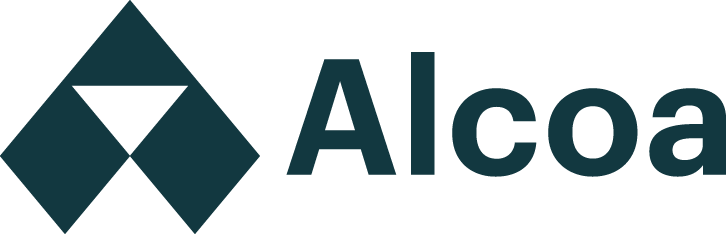
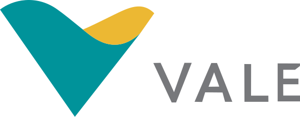
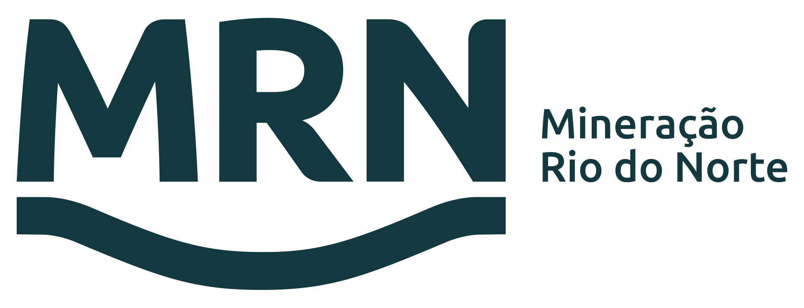
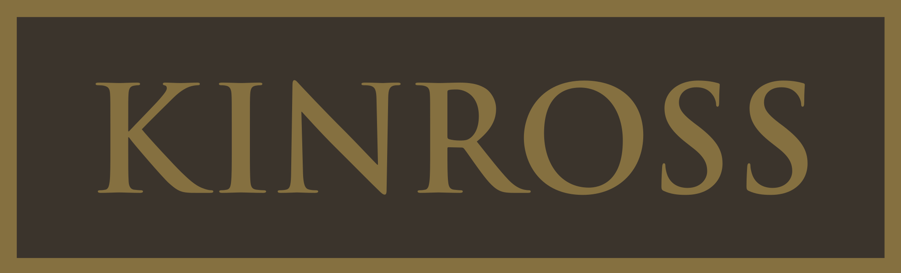
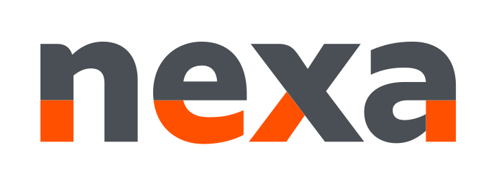

Iniciativas climáticas isoladas que não geram caixa, não atraem funding e não se traduzem em ativos reais.
Plataforma de Ativos Industriais de Descarbonização
Do gap de descarbonização ao ativo industrial real.
A DeCarbonMine transforma iniciativas climáticas isoladas em projetos executáveis, financiáveis e geradores de valor econômico de longo prazo — conectando engenharia, financiamento e créditos climáticos.
Role para explorar
Parceiros e operações





01 — O Problema
A indústria pesada enfrenta um gap estrutural de execução.
Existe enorme pressão para descarbonizar operações — mas a maior parte das empresas não consegue transformar iniciativas climáticas em projetos economicamente viáveis, financiáveis e executáveis em escala.
Dificuldade em transformar a redução de emissões em créditos robustos, receita verificável e valor econômico mensurável.
Engenharia, financiamento, carbono e operação industrial são tratados separadamente — sem a integração necessária para viabilizar projetos.
Baixa capacidade de estruturar SPEs, modelar financeiramente e apresentar projetos que atraiam capital institucional.
O gap que a DeCarbonMine resolve
Metas ESG & Net Zero
→
Iniciativas Isoladas
→
[ Gap de Execução ]
→
Ativo Industrial Gerador de Valor
Muitas mineradoras e indústrias possuem dezenas de iniciativas — mas não conseguem converter isso em projetos executáveis, geração de caixa ou financiamento competitivo.
02 — Para Quem
Empresas com pressão real de descarbonização e potencial de transformar isso em valor.
Mineração
Alto consumo de diesel, emissões de processo, operações remotas e pressão crescente de ESG e regulação.
Indústria Pesada
Emissões difíceis de abater, grandes volumes de resíduos industriais com potencial de valorização.
Cimento, Aço & Química
Processos intensivos em carbono com oportunidades de substituição de combustíveis e eficiência energética.
Agroindústria
Biomassa disponível, resíduos agrícolas com alto potencial de biochar, biometano e energia renovável.
Logística & Frotas
Exposição direta ao preço de combustíveis fósseis e à pressão regulatória de descarbonização de frotas.
Polos & Distritos Industriais
Clusters industriais que demandam infraestrutura climática e descarbonização territorial integrada.
Investidores & Fundos
Fundos e instituições em busca de ativos verdes robustos, financiáveis e com retorno econômico claro.
Grandes Consumidores de Energia
Grandes consumidores industriais que precisam reduzir exposição a carbono e combustíveis fósseis em escala.
Especialmente empresas com:
Alto consumo de diesel
Emissões difíceis de abater
Operações remotas
Biomassa disponível
Pressão regulatória
Metas Net Zero
Necessidade de funding climático
Projetos parados por falta de estruturação
Conheça
A DeCarbonMine em movimento.
03 — O Flywheel
O flywheel da DeCarbonMine.
Cada projeto gera retorno que financia o próximo. A lógica do flywheel garante que a descarbonização industrial se torna progressivamente mais viável e escalável.
Pressão
Metas ESG, regulação, custos de carbono e exposição a combustíveis fósseis criam urgência.
Estruturação
Originação, engenharia, financiamento e SPE transformam a oportunidade em ativo bancável.
Operação
O ativo opera gerando créditos de carbono, venda de energia/combustível e economia operacional.
Reinvestimento
Retornos financiam novos projetos, expandindo o portfólio de ativos industriais climáticos.
Vamos construir
Estruturando o próximo ciclo da descarbonização industrial.
Conectamos engenharia, financiamento e ativos climáticos para transformar projetos industriais em plataformas de valor de longo prazo.
Conversar com a DeCarbonMine →